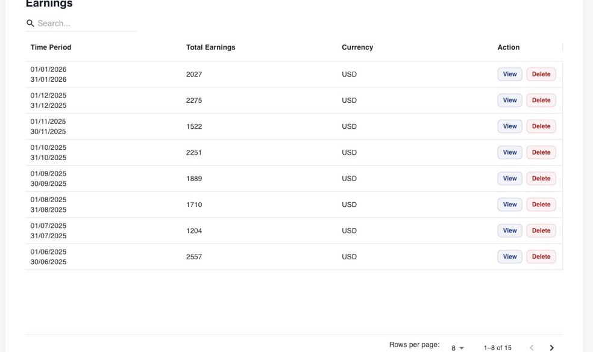
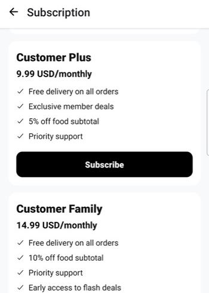
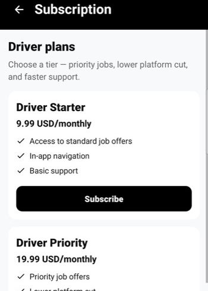
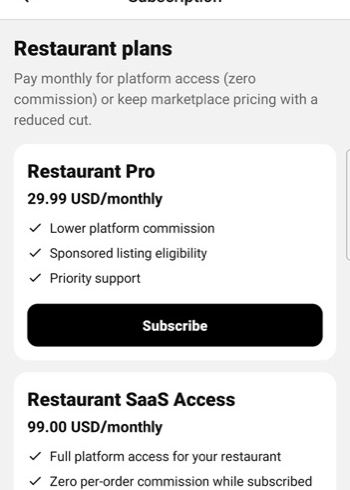
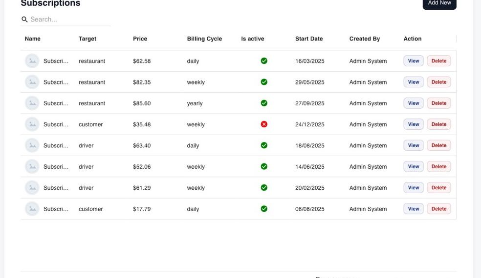
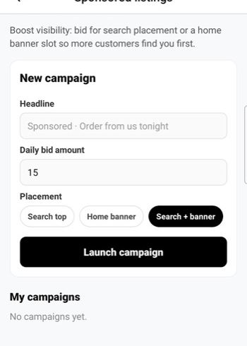
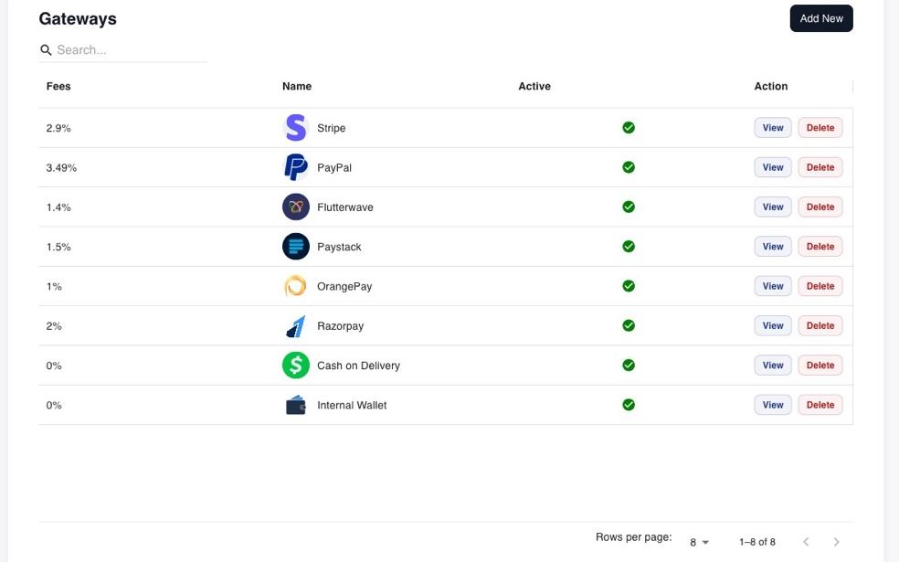

Monetization
A food marketplace only works if money flows the right way — on every order, every month, and every time a restaurant wants more visibility. This suite gives you several ways to earn, side by side, without bolting on a separate billing product.
Earn on the order — and between orders
Most food apps stop at “take a cut of the basket.” That is useful, but it is not enough when you want a business that survives quiet weekday afternoons. Here you can combine a platform commission with renewing membership plans, paid placement for restaurants, a customer wallet that encourages top-ups, and payment options that match the countries you serve.
Operators manage the levers from the admin console; customers, drivers, and restaurants see the matching screens in their apps. Monetization feels native — plans, ads, and balances live where people already work every day.
Commissions that stay flexible
Set a default commission for your market, then adjust it per restaurant when you need to. A new partner might need a gentler start; a high-volume kitchen might accept a standard rate. When a restaurant upgrades to a stronger subscription, you can reward them with a lower cut — a clear incentive that grows both sides of the marketplace instead of a one-sided squeeze.
In admin, earnings views show the split: what the platform keeps, what the restaurant earns, ready for payouts and reporting.

Admin earnings — platform vs restaurant split
Subscriptions that renew on their own
Offer plans to three audiences at once:
- Customers — free delivery, member-only offers, a reason to open the app again this week.
- Drivers — access tiers and support that reward the couriers who keep your SLA honest.
- Restaurants — better rates, visibility, and tools that feel worth a monthly invoice.
Recurring revenue sits next to commission income. You configure plans in admin; each app shows its own subscribe screen.

Customer plans

Driver plans

Restaurant plans

Admin — create and edit tiers (customer / driver / restaurant)
Sponsored listings restaurants will buy
Attention on the home feed and in search is limited. Sponsored listings let restaurants compete for that spotlight with a campaign: headline, schedule, budget, then impressions and clicks they can actually see.

Restaurant app — launch a campaign

Admin — monitor sponsored campaigns
Wallet, cashback, and payments that travel
A wallet turns one-off checkout into a relationship. Customers keep a balance, top up when they need to, and move through refunds with less friction. Gateways in admin help you match the payment habits of each market.

Customer wallet

Top up balance

Admin gateways — cards and regional PSPs
Why buyers care
A pretty menu browser is easy to demo. A platform that can commission, subscribe, advertise, wallet, and settle — in the same five-product suite you host and brand — is what turns a trial install into a real operator story.